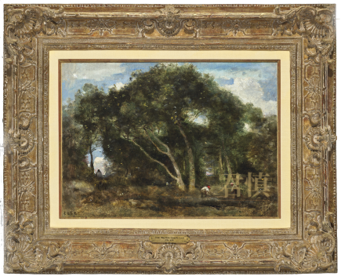
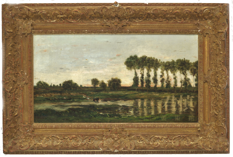
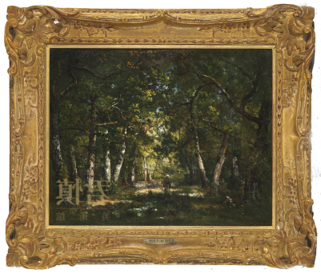
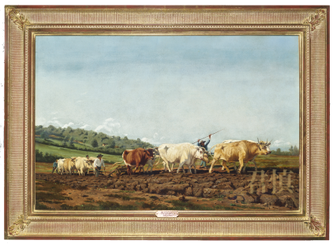

Jean Baptiste Camille COROT
(1796-1875)
Fontainebleau-Chênes inclinés dans
une Éclaircie de forêt
楓丹白露森林中的橡樹
油畫,40.64 x 55.25 cm
Théodore ROUSSEAU
(1812-1867)
Château de Chambord
香波堡
39.05 x 46.99 cm,油畫

Charles François DAUBIGNY
(1817-1878)
Landscape near the Seine
塞納河畔風景
34.29 x 63.5 cm,油畫

Narcisse Virgile DIAZ DE LA PEÑA
(1807-1876)
Le Sentier du bois
林間小徑
40.6 x 50.8 cm,油畫

Rosa BONHEUR
(1822-1899)
Agriculture en Nièvre
犂田
67.3 x 99.7 cm,油畫
Charles Emile JACQUE
(1813-1894)
The End of the Day
賦歸
52.70 x 44.45 cm,油畫
Jules BRETON
(1827-1906)
La Moissonneuse
收割
97.79 x 71.12 cm,油畫
Léon Augustin LHERMITTE
(1844-1925)
La Lecture
讀
56.5 x 52.7 cm,油畫